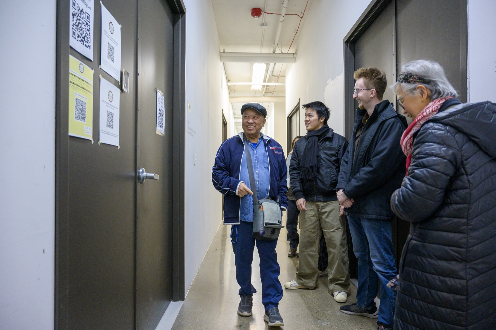

Starting Your Engaged Learning Experience
Turn Project Ideas into Shared Commitments
The beginning of a project shapes the partnership that follows. Clear outreach, a productive kickoff meeting, and written agreements help your team replace uncertainty with shared expectations.
Do not assume that your team and partner define success in the same way. Ask questions, confirm decisions, and create communication practices that everyone can follow.

Before the First Partner Meeting
- Choose one team contact who will coordinate communication.
- Send a professional introduction that explains the course, team, and purpose of the meeting.
- Prepare an agenda and share it with the partner in advance.
- Review what your team knows and list important questions that remain unanswered.
- Assign meeting roles such as facilitator, note taker, and timekeeper.
Topics for a Productive Kickoff
- Project purpose: What problem or opportunity is the partner trying to address?
- Users and stakeholders: Who will use the result, and who may be affected by it?
- Scope: What is included, what is excluded, and what can reasonably be completed?
- Roles: Who makes decisions, provides content, reviews work, and approves deliverables?
- Communication: Which channel will the team use, how often will updates occur, and what response time is reasonable?
- Success: What evidence will show that the project met the partner's needs?
Create a Shared Working Agreement
After the kickoff, document the decisions your team and partner made. A useful agreement should identify:
- Project goals and expected deliverables
- Team and partner responsibilities
- Milestones and review dates
- Communication channels and meeting schedule
- How changes, delays, and disagreements will be handled
- Any privacy, access, or ownership considerations
Send a written meeting summary so everyone has a chance to correct misunderstandings before work begins.
Starting Resources
- Initial Client Email Examples: Templates for first contact with a client or community partner.
- Initial Client Meeting Sample Agenda: A structure for running a professional kickoff meeting.
- Ginsberg Center Campus-Community Partnerships Toolkit: Principles for respectful and reciprocal community relationships.
- Student-Client Partnership Guide: Guidance for managing expectations and deliverables.
- Student Organization and ELO Partnership Agreement Template: A template for documenting roles and responsibilities.